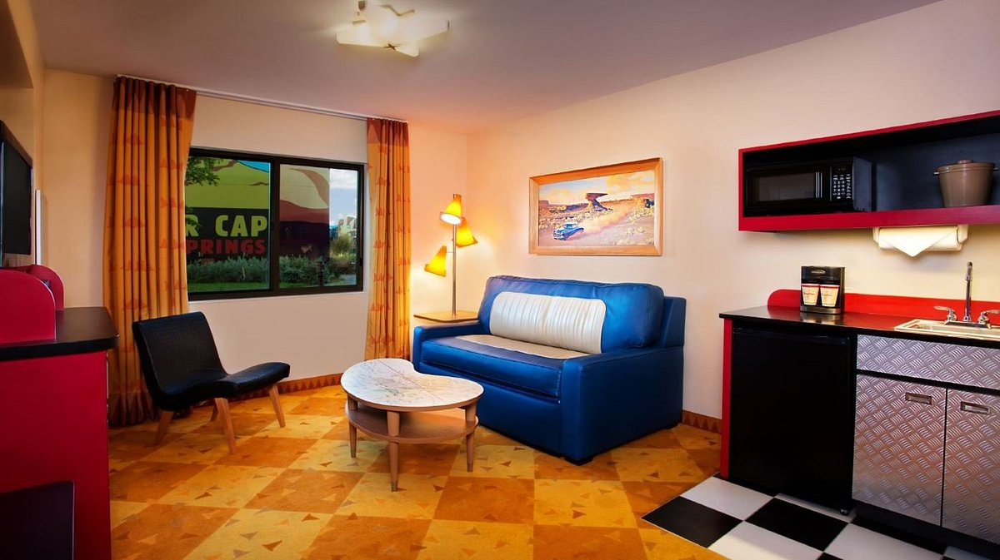
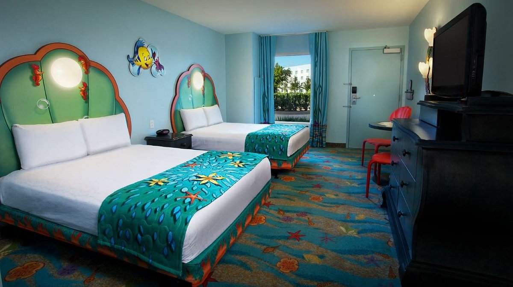
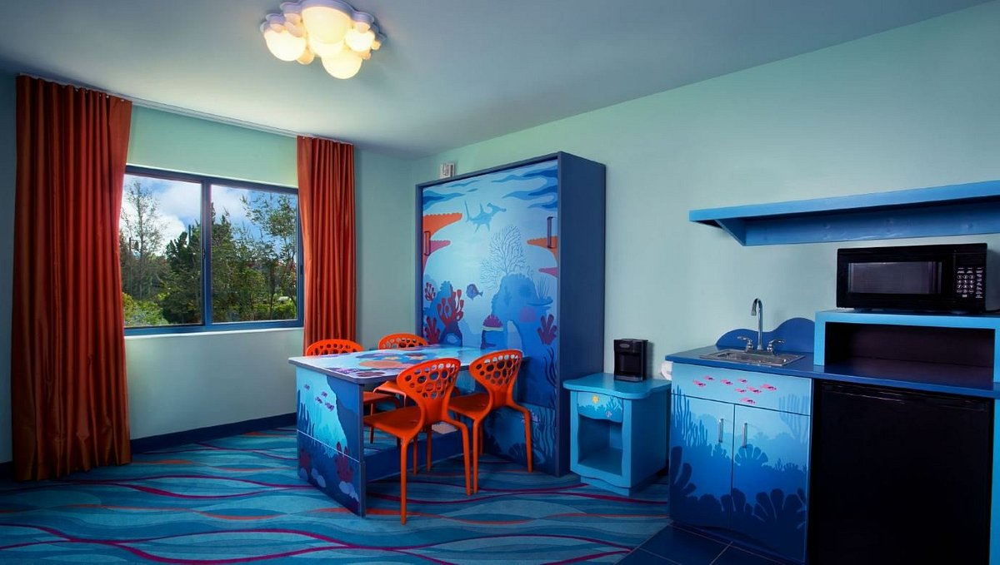

Acomodações
No Walt Disney World, todo resort possuí seus quartos e suítes característicos, onde os visitantes podem descansar, dormir, ou simplesmente relaxar num ambiente temático e aconchegante!
Quarto Standart The Little Mermaid
No quarto Standart The Little Marmaid, você se depara com um poco do universo da pequena sereia, e toda sua estética subaquática, com a paleta de cor perfeita para passar uma atmosfera completamente surreal, remetendo a diversas referências de um dos filmes com maior influência da Disney, e também possui vistas para o pátio, da piscina ou do estacionamento. Contém 2 Queen Beds size, ou 1 King Bed Size.
Comodidades
Em cada quarto do Walt Disney Resort, possuí suas comodidades, que podem variar de quarto para quarto, e essas comodidades são itens inclusos dentro do pacote de compra do quarto.
Comodidades internas do quarto
- Secador de cabelo;
- Cofre no quarto;
- Cafeteira;
- Cafeteira;
- Internet - serviço WiFi gratuito;
- Telefone com correio de voz;
- Ferro e tábua de passar roupas;
Tárifas
E temos também as tarifas de cada quarto, que remetem ao preço por noite no Resort.
- A partir de
- R$1.181.61 Por noite com impostos da Flórida aplicáveis incluídos.